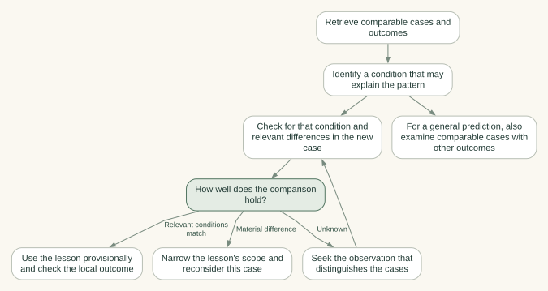

A duplex portfolio — learning across places
After a third unit loses hot water, Aura Pro brings the three repair histories together. The technicians’ notes point to the same installation detail. A fourth unit has the same heater model, but its record leaves that detail unclear. The manager asks Aura Pro to arrange a check at the next service visit. The technician finds a different installation and adds a photograph. The manager accepts the photo as answering the question about this heater and leaves it in service. The manager keeps the portfolio question open and agrees to review it when the next comparable service record documents both the installation detail and whether the heater was working. That record triggers a comparison with the three failures.
The question
Starting condition. Other cases suggest a useful explanation or action in the present case. Central question. Which similarities matter enough for the lesson to transfer?
Decision path


Output. A reasoned decision about applicability. A mismatch can be as valuable as a match because it prevents an unwarranted intervention and improves the next comparison.